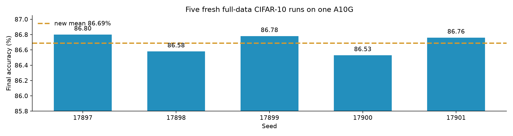

ML-Agent: What Reproduces? [A Reproduction]
This is a partial reproduction with fresh execution: Claims 2–5 receive new measurements; Claim 1 remains source-only because the trained agent and harness are absent.
| Asset | Public? | Effect |
|---|---|---|
| Trained checkpoint | No | No agent run |
| Evaluator | No | No Table 1 rerun |
| Step-wise RL | No | No training replay |
| Trajectories | No | No data audit |
| SFT / eval scripts | Stubs | “To be released” |
Official commit 15932e7, re-audited 17 July 2026. Missing assets block exact evidence; they do not falsify the paper.
- Source-verified: statement located in v1 or v2.
- Reproduced: direct independent executable check.
- Proxy: disclosed substitute model, task, or scale.
- Blocked: required public assets are absent.
- Paper: arXiv 2505.23723 v1 and v2.
- Review: OpenReview kcPPWaoegr.
- Code: bingreeky/ML-Agent at commit 15932e7.
Poster hotspots open the matching Trackio evidence page; archived PDFs and Job outputs are bundled.
INCONCLUSIVE / BLOCKED: v1 Table 1 reports the 7B Qwen2.5-based agent above GPT-4o, GPT-4o-mini, and 671B DeepSeek-R1 agents. No new matched comparison is possible from the release.
Revision warning: v2 replaces the GPT-4o comparators with GPT-5, Gemini, and Qwen3 agents; the challenge wording is v1-specific.
PARTIAL / PROXY: a task-conditioned action ranker trained on nine public tasks and evaluated on ten unseen tasks across the paper's image, text, and tabular modalities.
- T4 Job completed all 2,280 pipeline fits.
- 0.897953 mean versus 0.848451 random choice.
- Still below 0.902477 global-best action.

PARTIAL / PROXY: five fresh A10G runs used all 50k train and 10k test images. This CNN is not ML-Agent; comparison to 68.88% / 81.45% is contextual only.

5.8477 selected distance versus 3.6949 random mean, 4.8281 random p95, and empirical p = 0.00020.
- Fresh actions: every candidate was fitted on every task.
- Behavioral distance: standardized validation vectors.
- Not established: author idea pool or downstream RL gain.
A naïve pool-distance rule failed first (p = 0.933); the retained negative run motivated standard maximin farthest-point selection.
Selection audit: the saved 120 × 9 matrix, fixed seeds, and deterministic ties make the selection independently reproducible.
- T4 suite: 243 s running, about USD 0.03.
- A10G CIFAR: 3,881 s running, about USD 1.08.
- Verifier transcripts accompany both successful runs.
The run preserves ValueError: not-a-model feedback and assigns bounded sigmoid rewards to all ten successful edits.
| Trajectory | v1 | v2 |
|---|---|---|
| Invalid / error | 0 | −1 |
| Corner / non-edit | 0.5 | 0 |
| Improvement | Sigmoid | Linear |
| Executed edits | 10 cases | 0 to 1 |
Claim 5 reproduces the stated v1 mapping. Author code is absent; v2 changes the rule.
- Publish the trained Qwen2.5-7B checkpoint.
- Release evaluator, task environments, and exact prompts.
- Release SFT/RL code plus training trajectories and seeds.